New to git? Follow the steps below to get comfortable making changes to the code base, opening up a pull request (PR), and merging code into the primary branch. Any important git and GitHub terms are in bold with links to the official git reference materials.
The first thing you'll want to do is to download and install git. Clik here to download git for Windows,Linux or macOS.
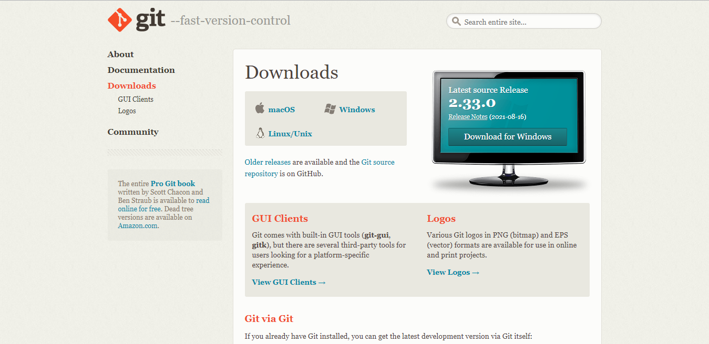Next task todo is making an account on GitHub. Clik here to make a GitHub account.
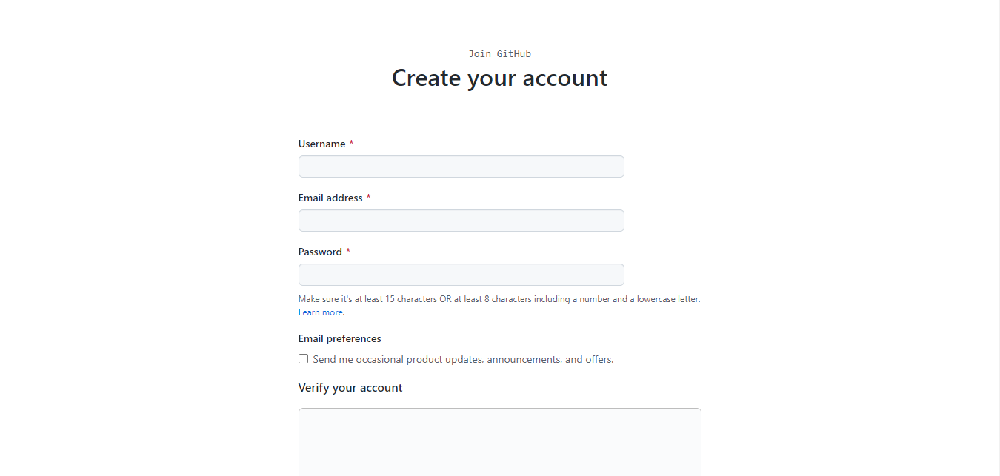A quick aside: git and GitHub are not the same thing. Git is an open-source, version control tool working on the Linux operating system; GitHub is a company that makes tools which integrate with git. You do not need GitHub to use git, but you cannot use GitHub without using git. There are many other alternatives to GitHub, such as GitLab, BitBucket.
When creating a new project on your local machine using git, you'll first create a new repository.
To use git we'll be using the terminal.To begin, open up a terminal - where you want to place the project on your local machine.
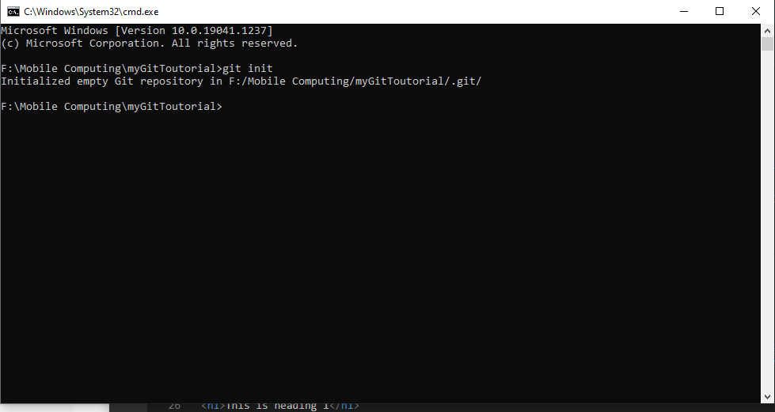The "git init" command will also make a hidden directory named ".git" in your local directory.
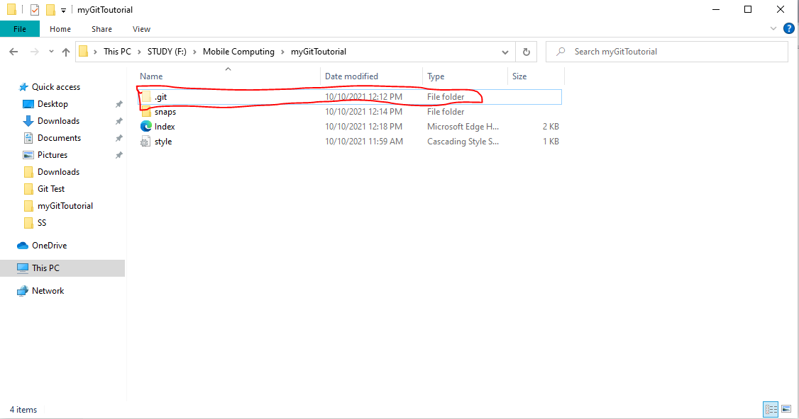Once you've added or modified files in a folder containing a .git repo, git will notice that the file exists inside the repo. But, git won't track the file unless you explicitly tell it to.
After creating the new file, you can use the "git status" command to see which files git knows exist.
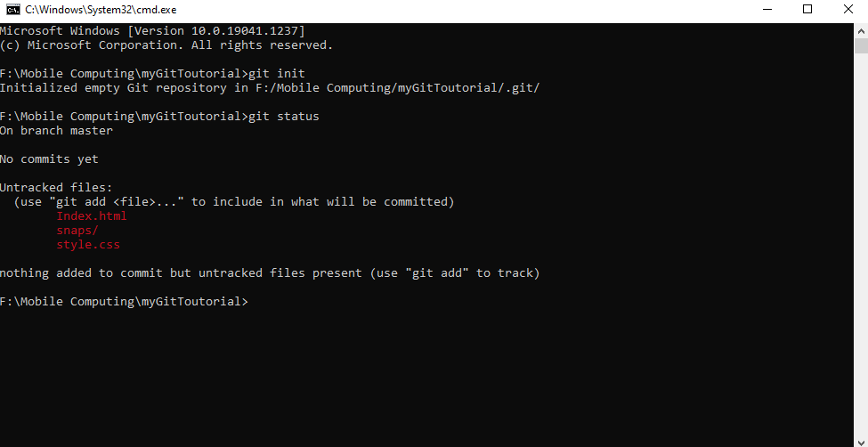What this basically says is, "Hey, we noticed you created some new files called Index.html,style.css and a folder snaps.But unless you use the "git add" command we aren't going to do anything with it."
One of the most confusing parts when you're first learning git is the concept of the staging environment and how it relates to a commit.
COMMIT: You make changes to your repo (for example, adding a file or modifying one) and then tell git to put those changes into a commit.Commits make up the essence of your project and allow you to jump to the state of a project at any other commit.
STAGING INDEX:How do you tell git which files to put into a commit?
This is where the staging environment or index come in.To add a file to a commit, you first need to add it to the staging environment (shown in the snap below).
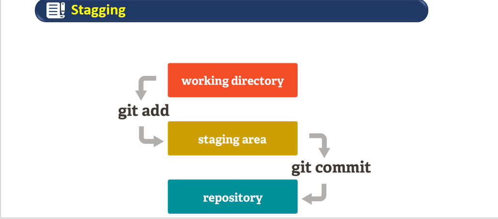To do this, you can use the command "git add filename" (see Snap below).
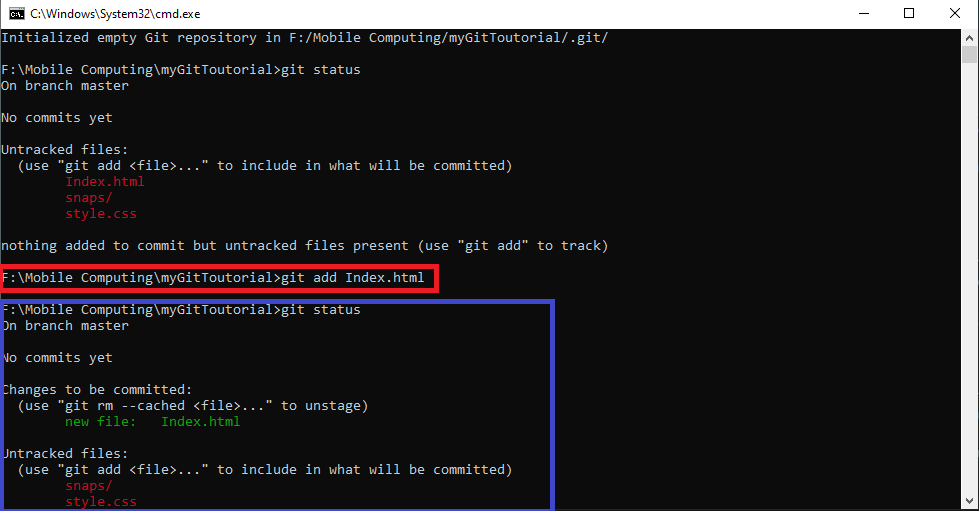Once you've used the git add command to add all the files you want to the staging environment, you can then tell git to package them into a commit using the command "git commit -m (your message about the commit)" .
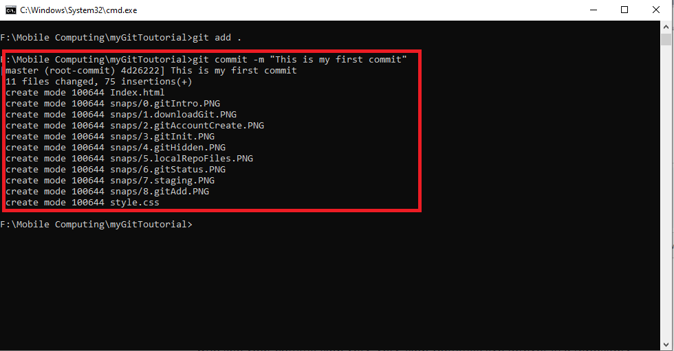The message at the end of the commit should be something related to what the commit contains - maybe it's a new feature, maybe it's a bug fix, maybe it's just fixing a typo.If you leave a clear explanation of your changes it can be extremely helpful for future programmers (perhaps future you!) who are trying to figure out why some change was made years later.
To create a new repository on GitHub, Log In and go to the GitHub home page. You can find the “New repository” option under the “+” sign next to your profile picture, in the top right corner of the navbar:
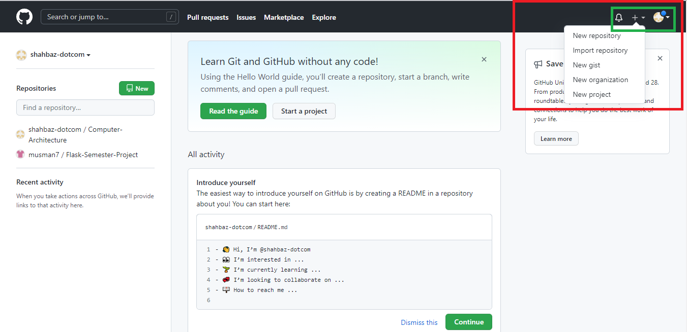After clicking the button, GitHub will ask you to name your repo and provide a brief description:
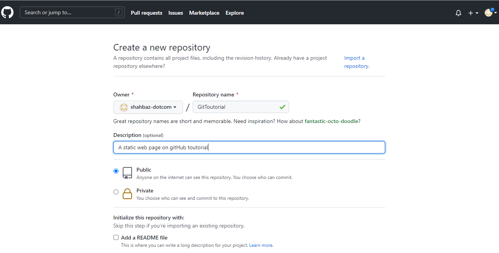When you're done filling out the information, press the 'Create repository' button to make your new repo.
Now we'll push the commit in your branch to your new GitHub repo. This allows other people to see the changes you've made,If they're approved by the repository's owner.
To push changes on GitHub,At first you'll have to configure the remote repository by running command "git remote add origin URL".
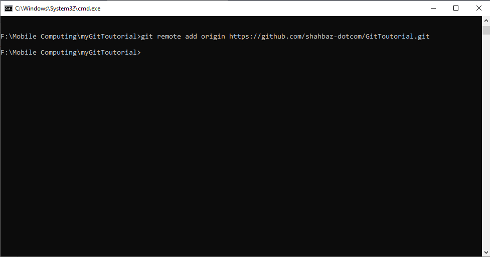Over here the URL is the URL of your repository made on gitHub.
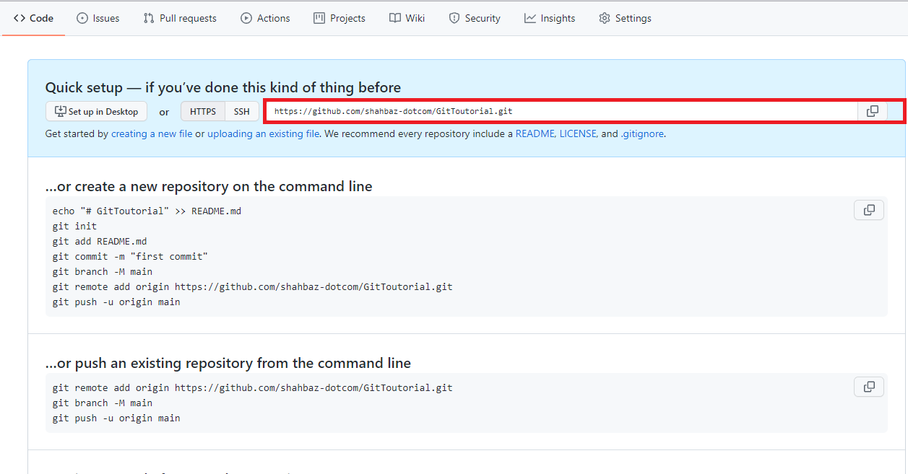Now! Its time to push your file to GitHub remote repository.For this,we will make the remote as upstream branch using command "git push --set-upstream origin master"
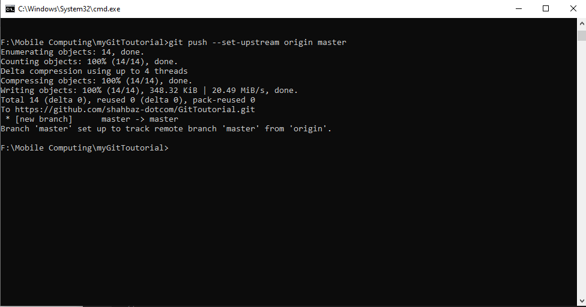If you refresh the GitHub page, you'll see your files on gitHub repository.
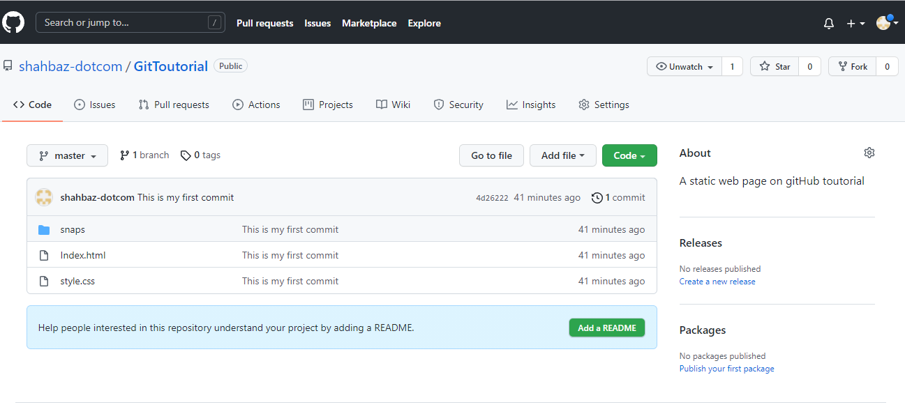To open a gitHub file in edit mode, click the Edite icon located on top right corner of the file.Shown below:
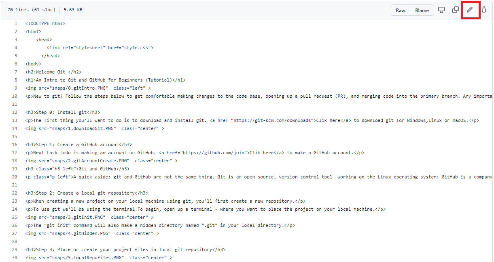After done with editing, its time to comment and commit:
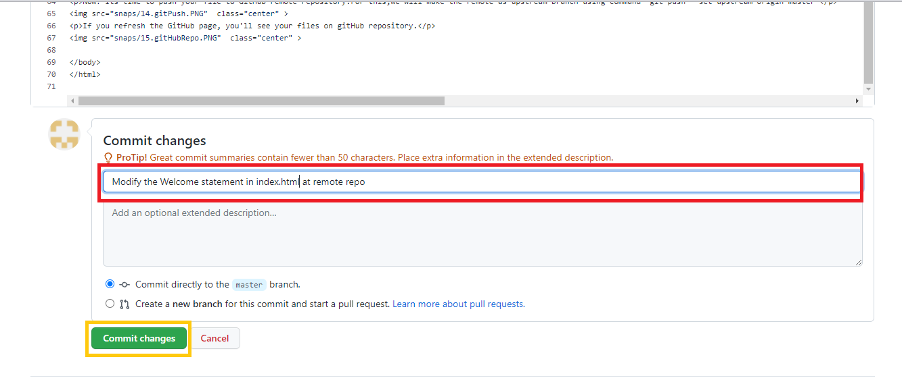